dir.create("plots")R ggplot2: intermediate data visualisation
Essential shortcuts
- function or dataset help: press F1 with your cursor anywhere in a function name.
- execute from script: Ctrl + Enter
- assignment operator (
<-): Alt + -
Open RStudio
On Library computers:
- Log in with your UQ username and password (use your student credentials if you are both staff and student)
- Make sure you have a working internet connection
- Go to search the magnifying glass (bottom left)
- Open the ZENworks application
- Look for the letter R
- Double click on RStudio which will install both R and RStudio
If you are using your own laptop:
- Make sure you have a working internet connection
- Open RStudio
Disclaimer
We will assume you are an R intermediate user and that you have used ggplot2 before.
What are we going to learn?
During this hands-on session, you will:
- install a tool for picking colours
- customise scales and ranges
- divide a visualisation into facets
- explore new geometries
- modify statistical transformations
- adjust a geometry’s position
- further modify themes
- make a plot interactive
Setting up
Install ggplot2 if you don’t already have it, with: install.packages("ggplot2")
Create a new project to keep everything nicely contained in one directory:
- Click the “Create a project” button (top left cube icon)
- Click “New Directory”
- Click “New Project” (“Empty project” if you have an older version of RStudio)
- In “Directory name”, type the name of your project, e.g. “ggplot2_intermediate”
- Select the folder where to locate your project: e.g.
Documents/RProjects, which you can create if it doesn’t exist yet. You can use your H drive at UQ to make sure you can find it again. - Click the “Create Project” button
Let’s also create a “plots” folder to store exports:
Create a new script (File > New File > R Script) and add a few comments to give context:
# Description : ggplot2 intermediate with gapminder data
# Author: <your name>
# Date: <today's date>Finally, make sure you load ggplot2 so we can use its functions:
library(ggplot2)Import data
Challenge 1 – import data
Our data is located at https://raw.githubusercontent.com/resbaz/r-novice-gapminder-files/master/data/gapminder-FiveYearData.csv
Using the following syntax, how can you read the online CSV data into an R object?
gapminder <- ...You have to use the read.csv() function, which can take a URL:
gapminder <- read.csv(
file = "https://raw.githubusercontent.com/resbaz/r-novice-gapminder-files/master/data/gapminder-FiveYearData.csv")If you are not familiar with the dataset, View() and summary() can help you explore it.
View(gapminder) # view as a separate spreadsheet
summary(gapminder) # summary statistics for each variableThe Environment pane gives you an overview of the variables.
Explore data visually
Let’s start with a question: how do Gross Domestic Product (GDP) and life expectancy relate?
We can make a simple plot with the basics of ggplot2:
ggplot(data = gapminder,
mapping = aes(x = gdpPercap,
y = lifeExp)) +
geom_point()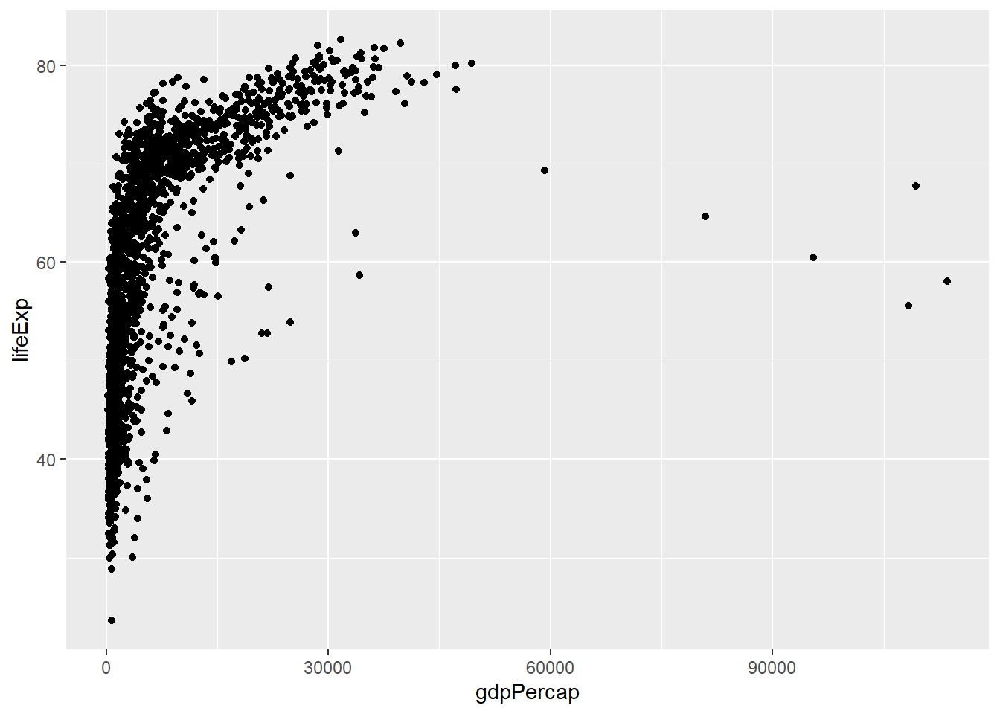
Remember that the 3 main elements of a ggplot2 visualisation are:
- the data
- the mapping of aesthetics to variables
- the geometry
Aesthetics available
So far we have been using the x and y aesthetics. There are more available, depending on the geometry that you are using.
Here are some common examples:
- To change the shape based on a variable, use
shape = <discrete variable>inside theaes()call. - If you want to change the size of the geometric object, you can use the
size = <continuous variable>argument. - Similarly, to change the colour based on a variable, use
colour = <variable>andfill = <variable>inside theaes()call.
Let’s modify our plot to colour the points according to the continent variable.
ggplot(data = gapminder,
mapping = aes(x = gdpPercap,
y = lifeExp)) +
geom_point(aes(colour = continent)) +
geom_smooth()`geom_smooth()` using method = 'gam' and formula = 'y ~ s(x, bs = "cs")'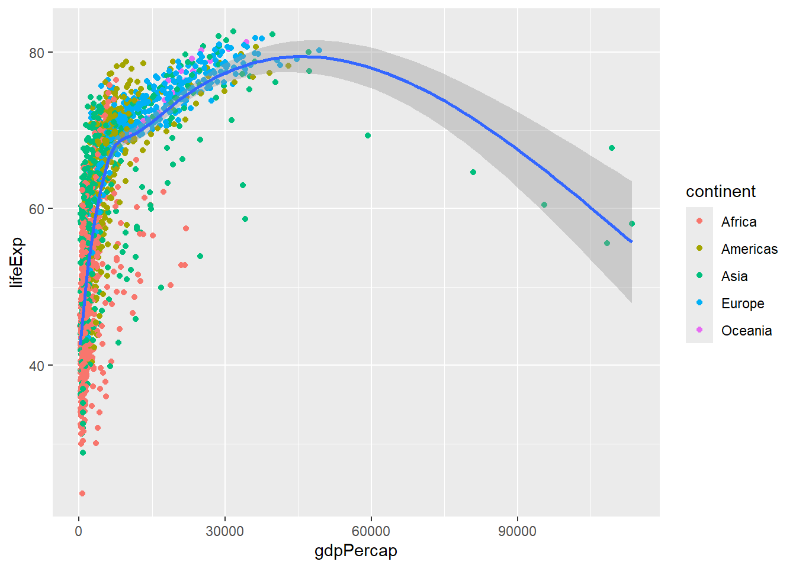
Challenge 2 - save our plot
How can we save our scatter plot to the ‘plots’ directory we created using a function?
ggsave(filename = "plots/gdpPercap_v_lifeExp.png", width = 7, height = 4)`geom_smooth()` using method = 'gam' and formula = 'y ~ s(x, bs = "cs")'Remember that the
ggsavefunction saves the last plot.
Modifying scales
More control over colours
This plot uses the default discrete palette.
Saving some typing: We will keep modifying this plot. To reuse the constant base of our plot (the
ggplot()call and the point geometry), we can create an object:
p <- ggplot(data = gapminder,
mapping = aes(x = gdpPercap,
y = lifeExp)) +
geom_point(aes(colour = continent)) +
geom_smooth()We can use other palettes than the default one. ggplot2 provides extra functions to modify colour scales. For example:
p +
scale_colour_viridis_d()`geom_smooth()` using method = 'gam' and formula = 'y ~ s(x, bs = "cs")'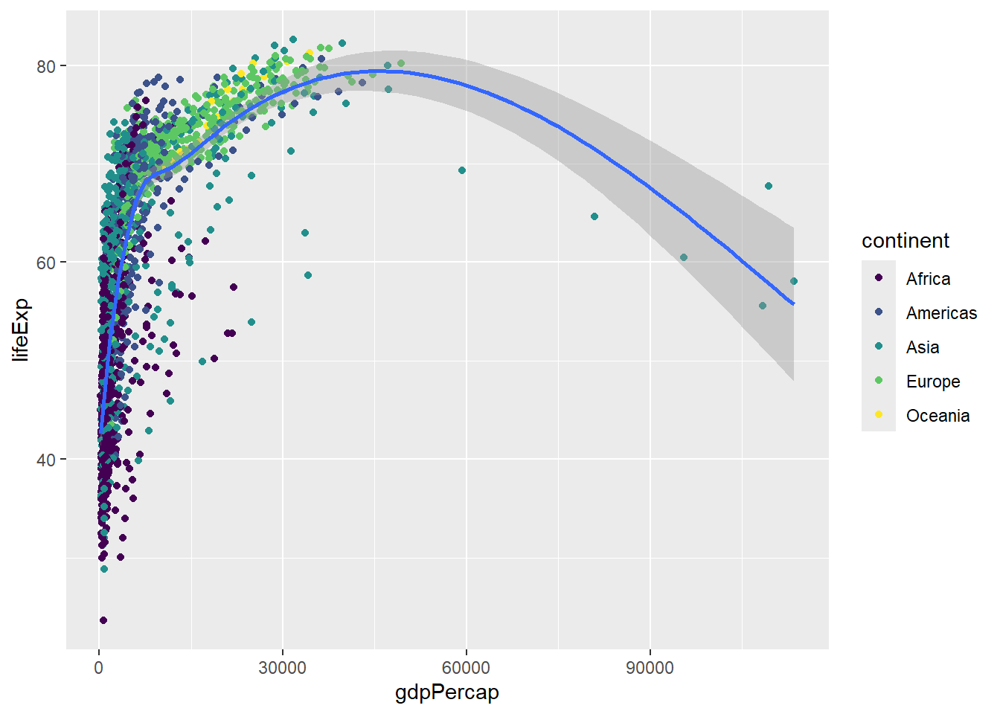
Viridis is a collection of palettes that are designed to be accessible (i.e. perceptually uniform in colour or black and white, and perceivable for various forms of colour blindness). The structure of the function name is scale_<aesthetic>_viridis_<datatype>(), the different data types being discrete, continuous or binned.
Another collection of palettes is the ColorBrewer collection:
p +
scale_colour_brewer(palette = "Set1")`geom_smooth()` using method = 'gam' and formula = 'y ~ s(x, bs = "cs")'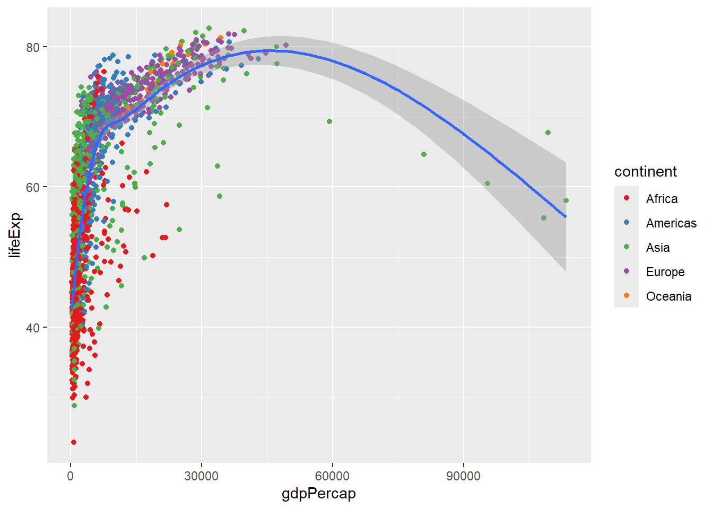
You can see the palettes available by looking at the help page of scale_colour_brewer(), under the header “Palettes”. However, the names alone might not be enough to picture them, so head to http://colorbrewer2.org/ to find the one that you like. Importantly, the website allows you to tick the options “colorblind safe” and “print friendly”… which would rule out all the qualitative palettes for our 5 continents!
A useful package that introduces many palettes for ggplot2 is the colorspace package, which promotes the Hue-Chroma-Luminance (HCL) colour space. This colour space is perceptually-based, which means it is particularly suited for human perception of colours.
For colorspace, the function names are structured as follows: scale_<aesthetic>_<datatype>_<colorscale>()
Let’s first use an alternative qualitative palette:
library(colorspace)
p +
scale_colour_discrete_qualitative()`geom_smooth()` using method = 'gam' and formula = 'y ~ s(x, bs = "cs")'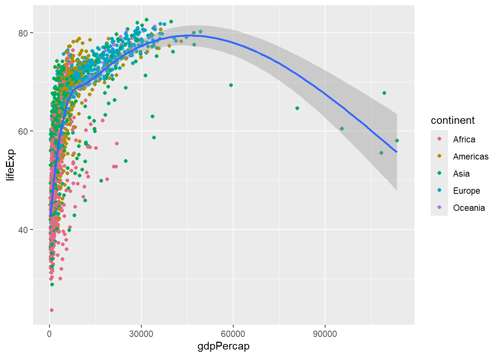
This is the default ggplot2 palette! Which means ggplot2 already use a HCL palette. But having the colorspace package loaded, we can now see all the palettes available:
hcl_palettes(plot = TRUE)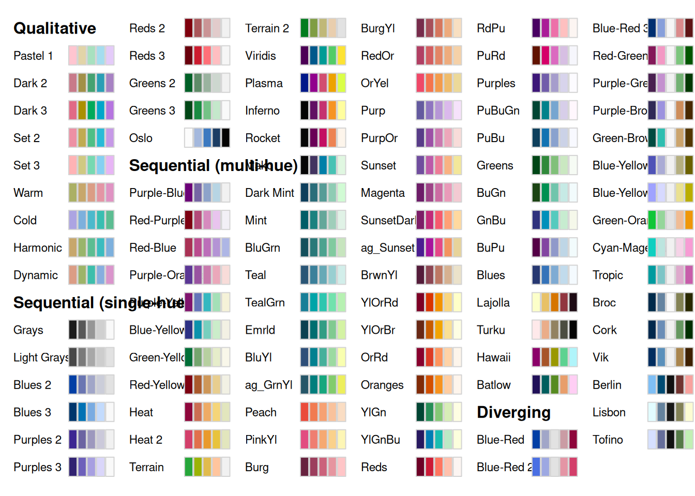
Let’s try a different one:
p +
scale_colour_discrete_sequential("Batlow")`geom_smooth()` using method = 'gam' and formula = 'y ~ s(x, bs = "cs")'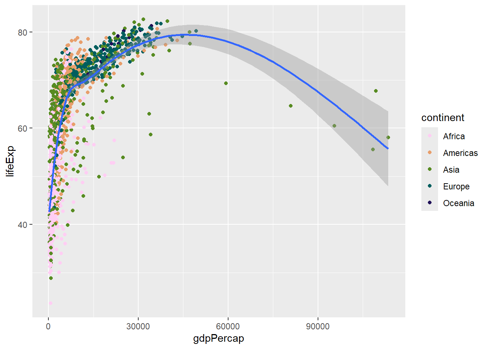
Finally, to use a custom palette, we can use the ggplot2 function scale_colour_manual() and provide a list of colour names.
p +
scale_colour_manual(values = c("lightblue", "pink", "purple", "black", "red"))`geom_smooth()` using method = 'gam' and formula = 'y ~ s(x, bs = "cs")'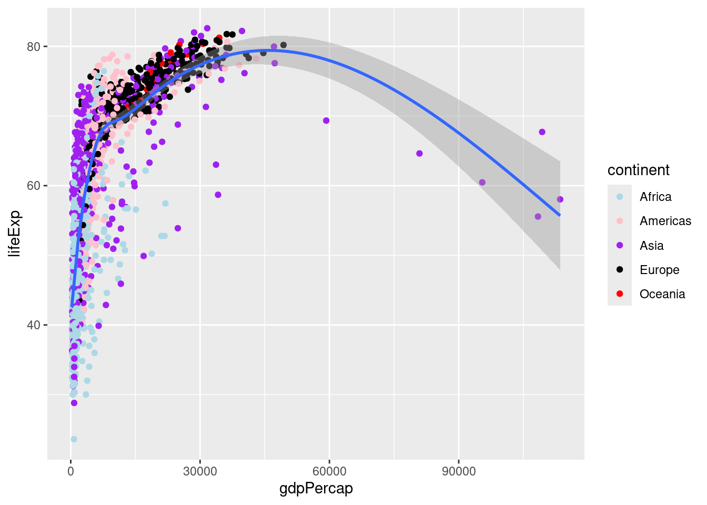
You can list all the R colour names with the function colours(), which prints out a list of their names, but know that you are not limited to these 657 values: you can also use HEX values, which is particularly useful if you have to respect a colour scheme you were given.
You can find visual lists of all the R colours, but there is a way to pick colours more comfortably: we can use the colourpicker package, which adds a handy add-in to RStudio. Install it and use the new “Addins > Colour Picker” tool to create a vector of colours for your custom palette.
That was a lot of options about colours, but know that in some cases, the most straight-forward way to make your visualisations readable by most is to use symbols instead of colours. In ggplot2, you would use the
shapeaesthetic.
Axis scale modifiers
We could further modify our plot to make it more readable. For example, we can use a different x axis scale to distribute the data differently:
p +
scale_x_log10()`geom_smooth()` using method = 'gam' and formula = 'y ~ s(x, bs = "cs")'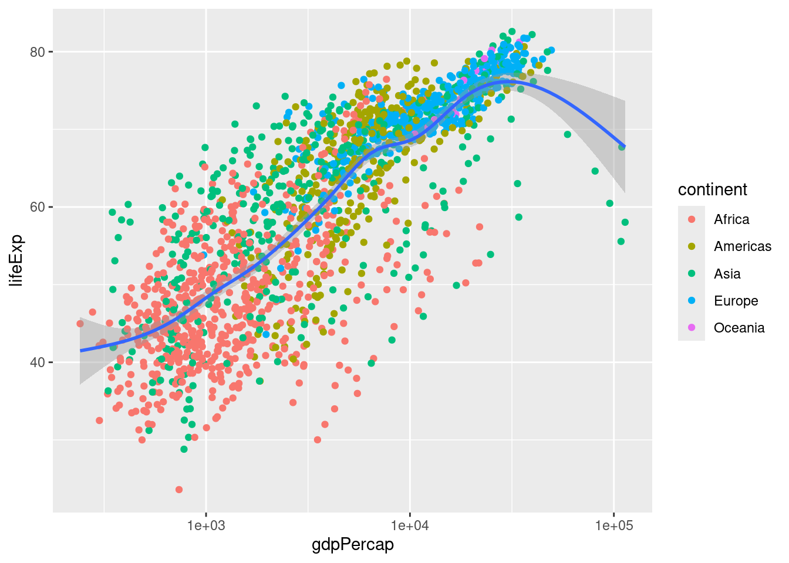
It is possible to use various transformations with the scale_x_continuous() function’s tranform argument.
We can also further customise a scale with breaks and labels:
p +
scale_x_log10(breaks = c(5e2, 1e3, 1e4, 1e5),
labels = c("500", "1 k", "10 k", "100 k"))`geom_smooth()` using method = 'gam' and formula = 'y ~ s(x, bs = "cs")'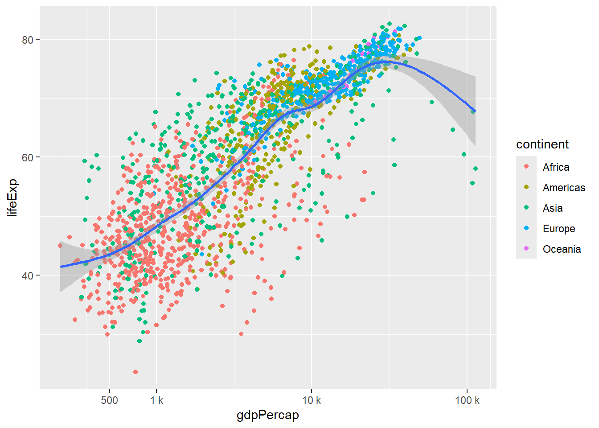
You can use the scientific notation
1e5to mean “a 1 followed by 5 zeros”.
Zooming in
We might want to focus on the left hand side part of our original plot:
p`geom_smooth()` using method = 'gam' and formula = 'y ~ s(x, bs = "cs")'
To zoom in, we might want to change our axis limits by using ylim().
p +
xlim(c(0, 6e4))`geom_smooth()` using method = 'gam' and formula = 'y ~ s(x, bs = "cs")'Warning: Removed 5 rows containing non-finite outside the scale range
(`stat_smooth()`).Warning: Removed 5 rows containing missing values or values outside the scale range
(`geom_point()`).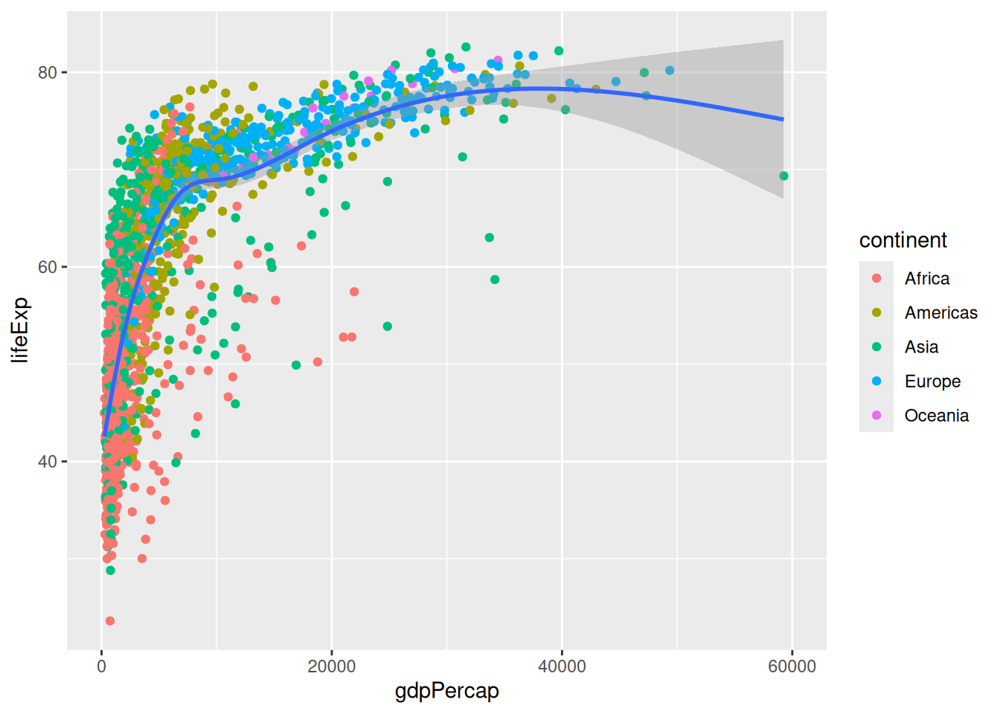
Notice the warning message? ggplot2 informs us that it couldn’t represent part of the data because of the axis limits.
The method we use works for our point geometry, but is problematic for other shapes that could disappear entirely or change their appearance because they are based on different data: we are actually clipping our visualisation! Notice how the trend line now looks different?
A better way to focus on one part of the plot would be to modify the coordinate system:
p +
coord_cartesian(xlim = c(0, 6e4))`geom_smooth()` using method = 'gam' and formula = 'y ~ s(x, bs = "cs")'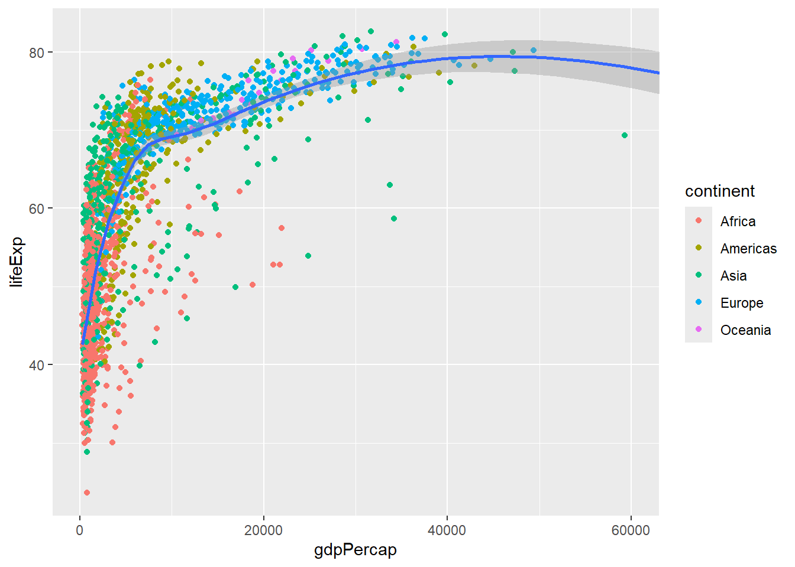
The Cartesian coordinate system is the default one in ggplot2. You could change the coordinate system to coord_polar() for circular visualisations, or to coord_map() to visualise spatial data.
Interactive plots
The plotly package brings the power of the Plotly javascript library to R. Install it with install.packages(plotly), and you’ll then be able to convert a ggplot2 visualisation into an interactive HTML visualisation with one single function!
Let’s reuse our original plot object with some modification, and feed it to ggplotly():
p <- ggplot(data = gapminder,
mapping = aes(x = gdpPercap,
y = lifeExp,
colour = continent)) + # move the colour aesthetic
geom_point() +
# remove trend line
scale_x_log10() # spread the data on the x axis
library(plotly)
ggplotly(p)You can now identify single points, zoom into your plot, and show/hide categories. However, the pop-up does not tell us which country the point corresponds to. That’s because we don’t mention the country variable in our code. Let’s reveal that information by slightly modifying the p object:
p <- ggplot(data = gapminder,
mapping = aes(x = gdpPercap,
y = lifeExp,
colour = continent,
label = country)) + # one extra aesthetic for an extra variable
geom_point() +
scale_x_log10()The interactive version now tells us which country each point correspond to:
ggplotly(p)To add yet another variable to the visualisation, we can animate the plot b< associating the frame aesthetic with the year variable. This adds a slider and a “Play” button under the visualisation.
p <- ggplot(data = gapminder,
mapping = aes(x = gdpPercap,
y = lifeExp,
colour = continent,
label = country,
frame = year)) + # one frame per year
geom_point() +
scale_x_log10()
ggplotly(p)You can export the visualisation as a HTML page for sharing with others.
Histograms
Challenge 3 – histogram of life expectancy
Search for the histogram geometry function, and plot the life expectancy. How can we modify the bars?
ggplot(gapminder, aes(x = lifeExp)) +
geom_histogram() # by default, bins = 30`stat_bin()` using `bins = 30`. Pick better value with `binwidth`.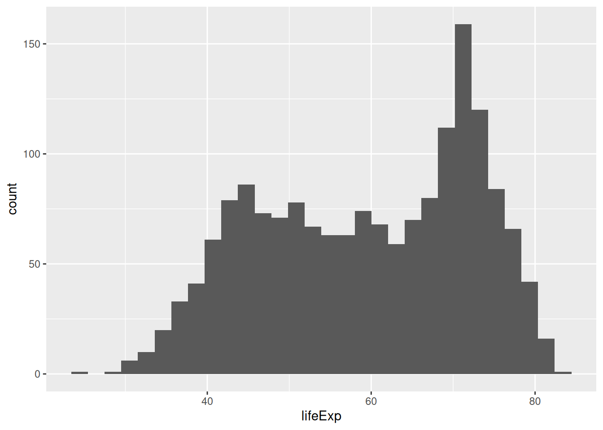
Saving some typing: remember we can omit the names of the arguments if we use them in order? Being explicit about the argument names is useful when learning the ins and outs of a function, but as you get more familiar with ggplot2, you can do away with the obvious ones, like
data =andmapping =(as long as they are used in the right order!).
Let’s change the bin width:
ggplot(gapminder, aes(x = lifeExp)) +
geom_histogram(binwidth = 1)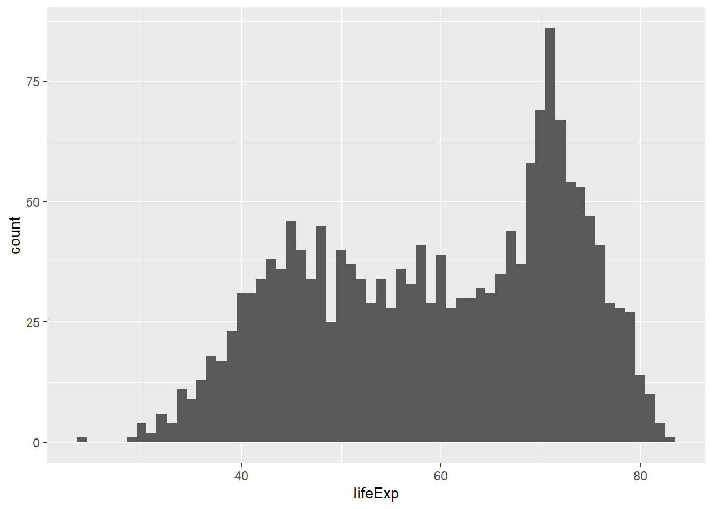
Here, each bar contains one year of life expectancy.
We can also change the number of bins:
ggplot(gapminder, aes(x = lifeExp)) +
geom_histogram(bins = 10)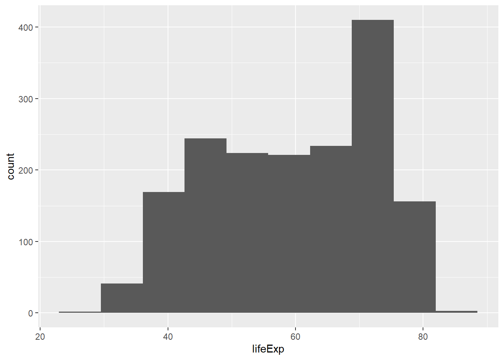
Now, let’s colour the bins by continent. Instinctively, you could try the colour aesthetic:
ggplot(gapminder, aes(x = lifeExp, colour = continent)) +
geom_histogram(bins = 10)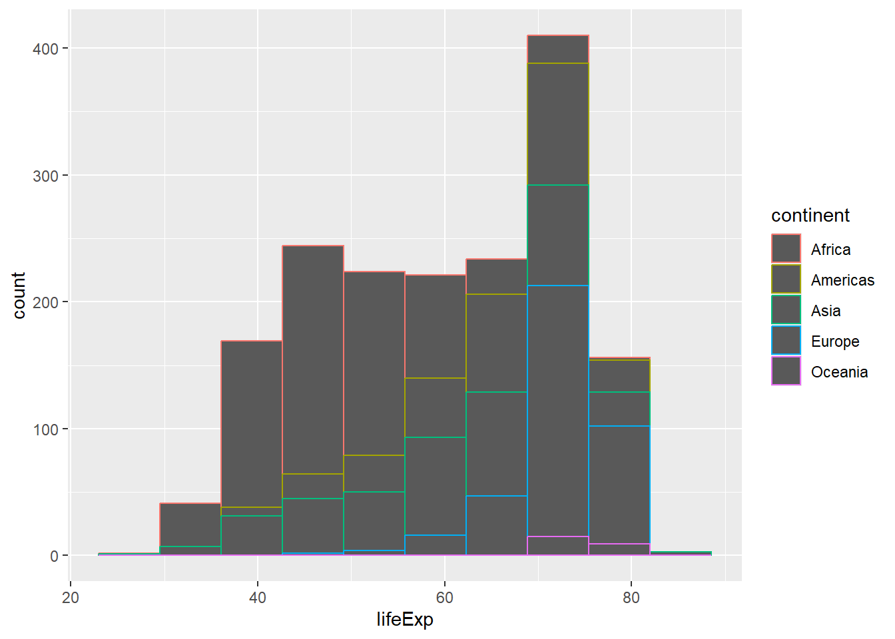
…but it only colours the outline of the rectangles!
Some aesthetics will work better with some geometries than others. We have to use the fill aesthetic to colour the areas instead:
ggplot(gapminder, aes(x = lifeExp, fill = continent)) +
geom_histogram(bins = 10)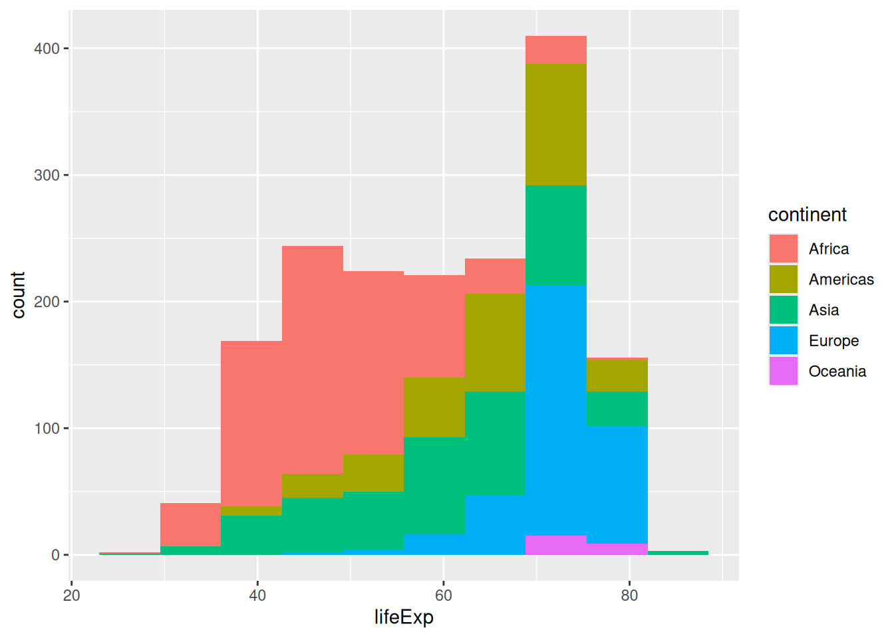
Colouring our bins allows us to experiment with the geometry’s position. The histogram geometry uses the “stack” position by default. It might convey different information if we make it use ratios instead, using the position = "fill" argument:
ggplot(gapminder,
aes(x = lifeExp,
fill = continent)) +
geom_histogram(bins = 10,
position = "fill")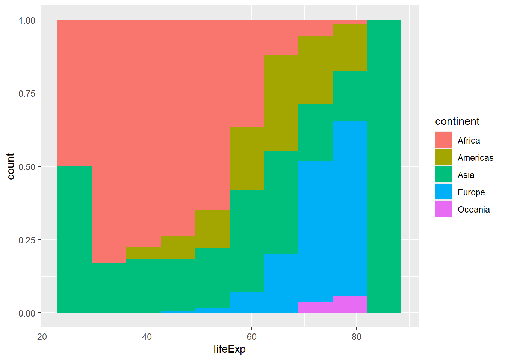
You might have noticed that the y-axis is still labeled ‘count’ when it has changed to a proportion. We can modify the y-axis labels to percent using the percent() function from the scales package.
We can also modify the y-axis labels with the labs() function.
library(scales)
ggplot(gapminder,
aes(x = lifeExp,
fill = continent)) +
geom_histogram(bins = 10,
position = "fill") +
scale_y_continuous(labels = percent) +
labs(y = "Percent")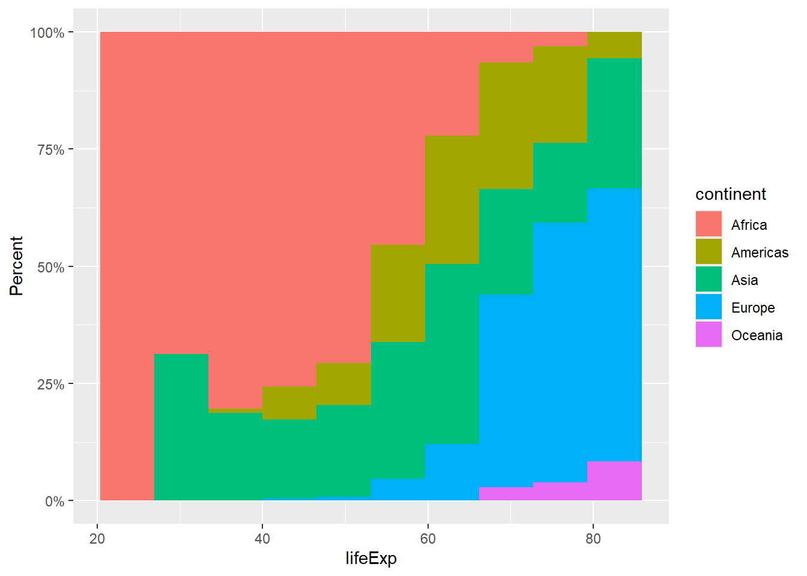
We can also make the bars “dodge” each other:
ggplot(gapminder,
aes(x = lifeExp,
fill = continent)) +
geom_histogram(bins = 10,
position = "dodge")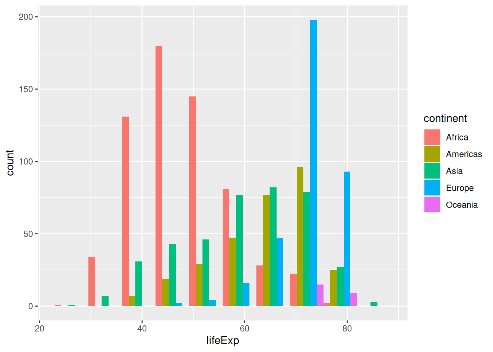
This “dodged” version reads similarly to a density plot (although the number of countries per continent does not influence the size):
ggplot(gapminder,
aes(x = lifeExp,
colour = continent)) +
geom_density()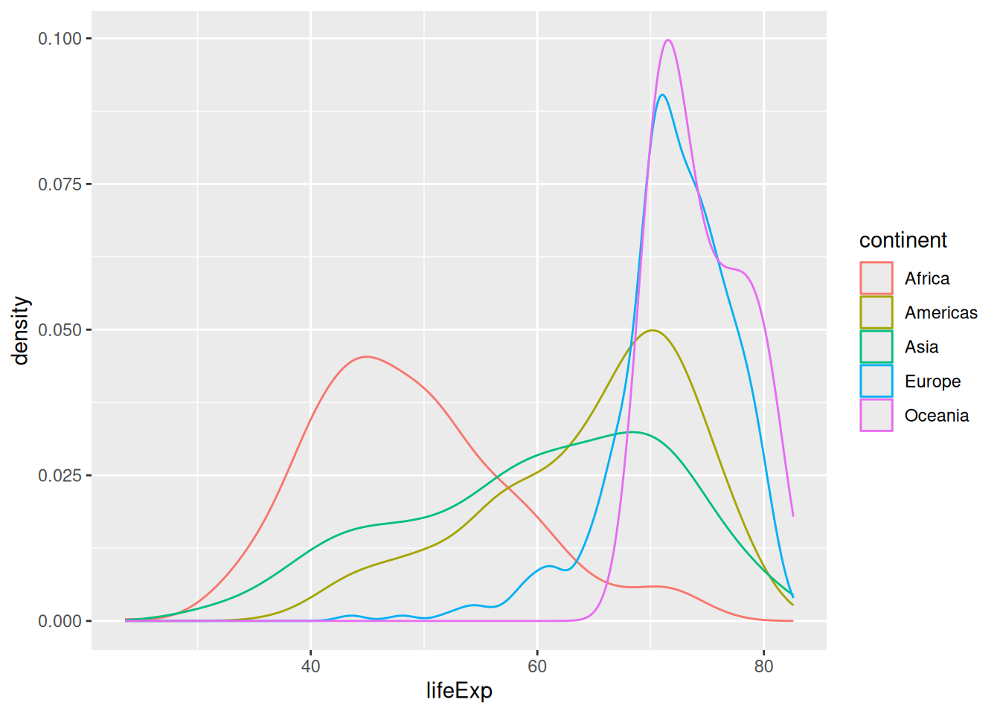
Faceting
An even more readable representation of the dodged histogram could use faceting:
ggplot(gapminder,
aes(x = lifeExp,
fill = continent)) +
geom_histogram(bins = 40) +
facet_wrap(vars(continent))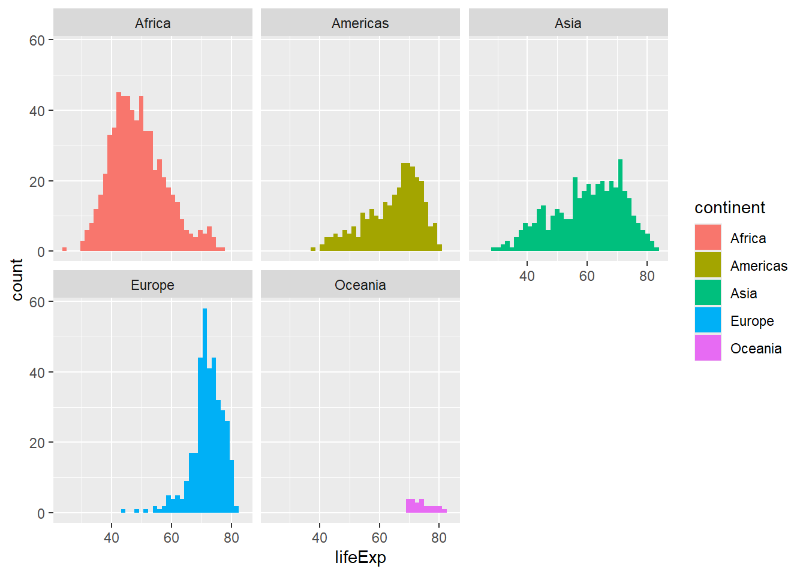
We have to wrap the variable(s) we want to facet by into the vars() function.
Faceting is a great way to add yet another variable to your visualisation, instead of using another aesthetic. We can now compare distributions across labelled panels, with the axes using the same ranges by default.
Theming
The legend is probably superfluous. We want to keep the colours, but we use the theme() function to customise the look of our plot and remove the legend:
ggplot(gapminder,
aes(x = lifeExp,
fill = continent)) +
geom_histogram(bins = 40) +
facet_wrap(vars(continent)) +
theme(legend.position = "none")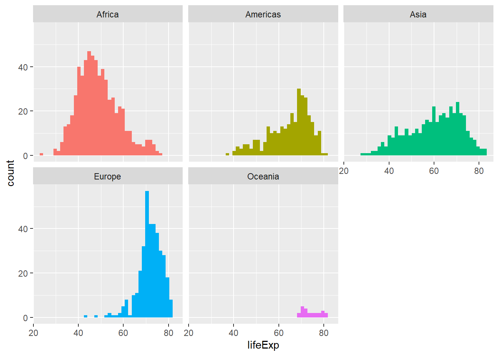
If you use a pre-built theme function, make sure you place it before customising the legend. Otherwise it will bring the legend back!
ggplot(gapminder,
aes(x = lifeExp,
fill = continent)) +
geom_histogram(bins = 40) +
facet_wrap(vars(continent)) +
theme_minimal() + # before customising the legend!
theme(legend.position = "none")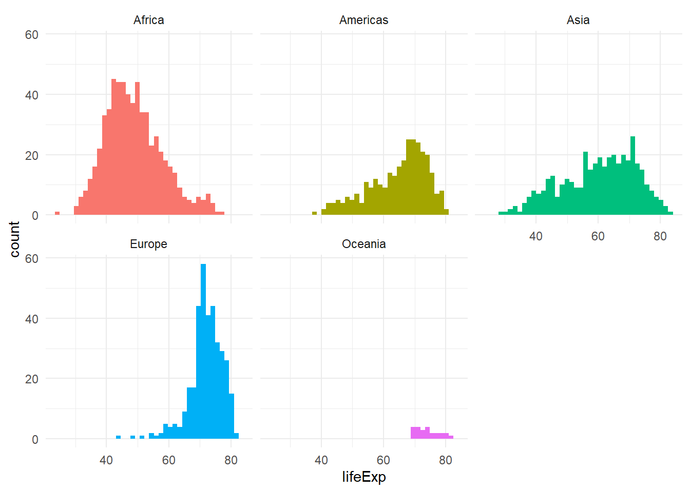
A more refined facetted example
This extra example gives an idea of how a refined ggplot2 visualisation might be constructed. It represents 4 different variables, using the larger diamonds data set.
ggplot(diamonds,
aes(x = carat,
y = price)) +
geom_point(aes(colour = color),
alpha = 0.5,
size = 0.5) +
scale_colour_viridis_d(option = "turbo") +
geom_smooth(se = FALSE,
linetype = "dashed",
colour = "black",
linewidth = 0.5) +
facet_wrap(vars(cut)) +
theme_minimal() +
labs(y = "price (USD)")`geom_smooth()` using method = 'gam' and formula = 'y ~ s(x, bs = "cs")'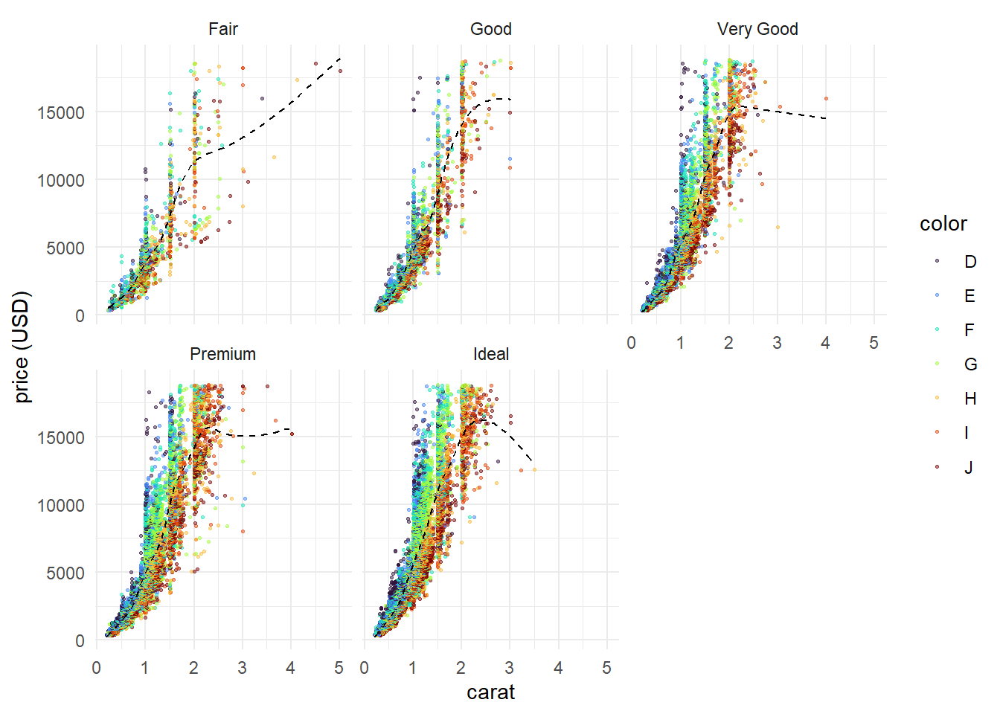
In this visualisation:
- 4 different variables are represented, thanks to both aesthetics and facets
- two geometries are layered on top of each other to represent a relationship
- both geometries are customised to make the plot readable (important here, since there are close to 54,000 rows of data)
- the default colour scale is replaced
- a built-in theme is used
- a label clarifies the unit of measurement
Boxplots
A simple boxplot can help visualise a distribution in categories:
ggplot(gapminder, aes(x = continent, y = lifeExp)) +
geom_boxplot()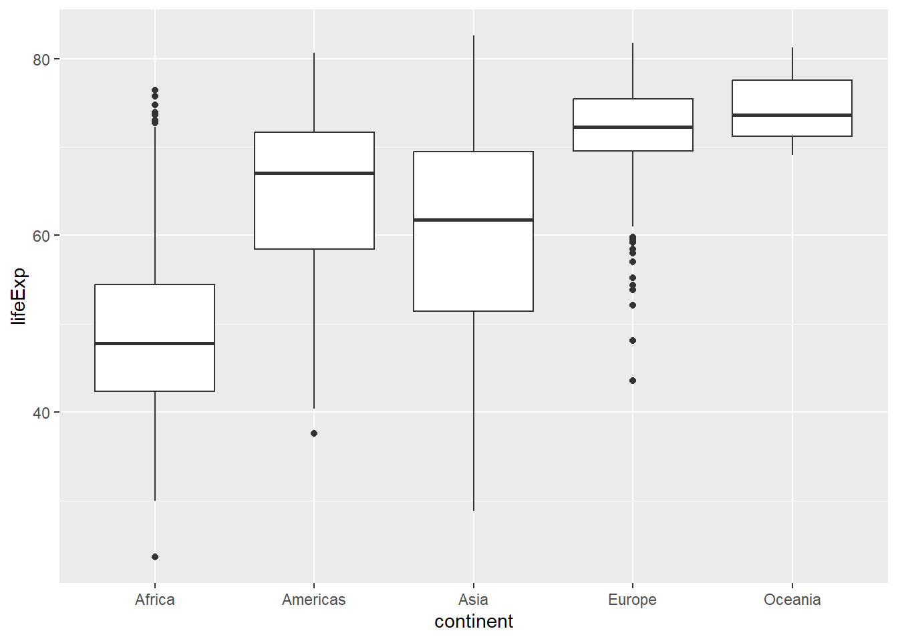
Challenge 4 – code comprehension
What do you think this extra line might do to our boxplots?
ggplot(gapminder, aes(x = continent, y = lifeExp)) +
geom_boxplot() +
theme(axis.text.x = element_text(angle = 90))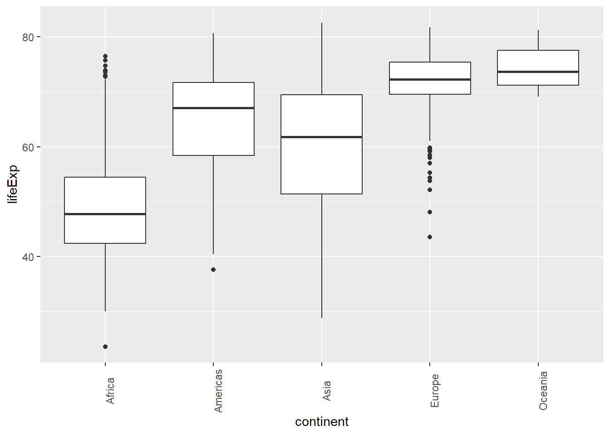
This is useful if the x labels get too cramped on the x axis: you can rotate them to whatever angle you want.
Try turning this plot into an interactive visualisation to see stats easily!
Summarise data and plot
Let’s try summarising the average and standard deviation of life expectancy by continent from the gapminder data and piping it directly into a ggplot. We will need to install/load dplyr for this.
# install.packages("dplyr")
library(dplyr)
Attaching package: 'dplyr'The following objects are masked from 'package:stats':
filter, lagThe following objects are masked from 'package:base':
intersect, setdiff, setequal, uniongapminder %>%
group_by(continent) %>%
summarise(aveLE = mean(lifeExp),
sdLE = sd(lifeExp)) %>%
ggplot(aes(x = continent,
y = aveLE)) +
geom_bar(stat = "identity",
fill = "tomato") +
geom_errorbar(aes(ymin = aveLE - sdLE,
ymax = aveLE + sdLE),
width = 0.1) +
labs(x = "Continent",
y = "Life Expectancy in Years")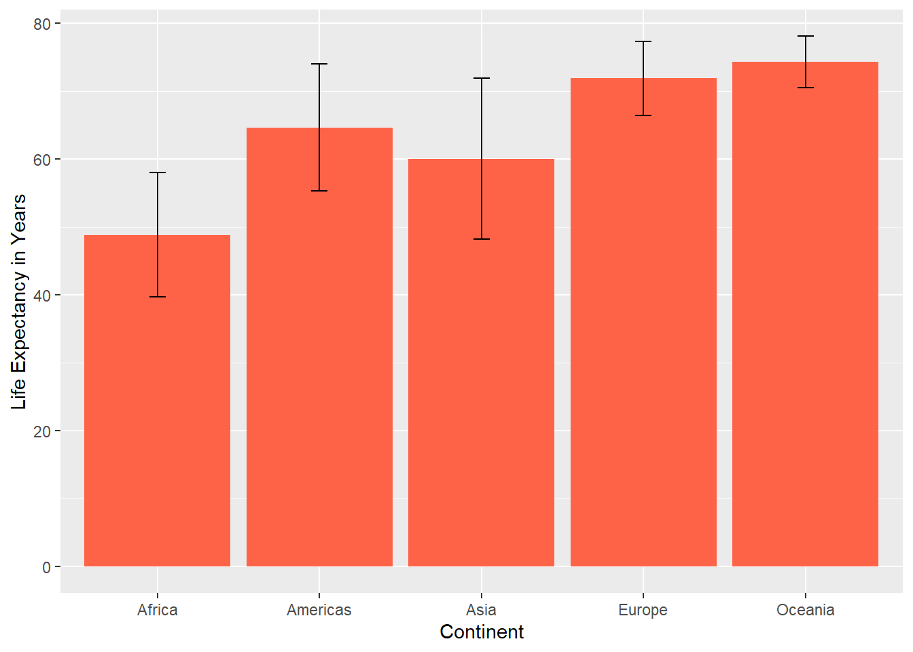
Plot from multiple summarised dataframes
In ggplot2, multiple data frames can be plotted on the same plot. For example, let’s say we wanted to make a bar graph of total population by year with the gapminder data set colored by continent and also include the standard deviation of the total population per year at the top of each column as an error bar? This may or may not make the most sense in terms of representing the data, but we will do it here as an exercise.
- summarise the data by year to calculate the standard deviation
- summarise the data by continent and year for the filled columns
- plot the continent data and add the error bars from the first summary
total <- gapminder %>%
group_by(year) %>% # group by year
summarise(tot = sum(pop), # sum the population for every year
SD = sd(pop))
totalcont_ave <- gapminder %>%
group_by(continent, year) %>%
summarise(totalpop = sum(pop)) %>%
ungroup()`summarise()` has grouped output by 'continent'. You can override using the
`.groups` argument.cont_aveWhen specifying a data set outside of the main ggplot() function - the data = argument must be used. The other functions geom_bar() etc. assume the first argument is mapping = aes() unless the data argument is explicitly defined.
ggplot(data = cont_ave, aes(x = year,
y = totalpop)) +
geom_bar(aes(fill = continent),
stat = "identity") + # default is `stat = count` like a histogram
geom_errorbar(data = total, # must use `data = ` to specify a new data set being used
aes(y = tot, # the y from the ggplot(aes()) is inherited, update
ymin = tot - SD, # error bar arguments
ymax = tot + SD),
width = 0.8) +
scale_x_continuous(breaks = seq(from = 1952, to = 2007, by = 5)) + # use seq to get years from 1952 - 2007 every 5 yrs to label every column
scale_y_continuous(breaks = c(2e9, 4e9, 6e9), # keep the same breaks
labels = c("2", "4", "6")) + # relabel so number represent billions
labs(x = "Year",
y = "Population in Billions", # rename units in billions
fill = "Continent") + # relabel legend from the 'fill' in the geom_bar
theme_dark() + # different theme
theme(panel.grid = element_blank()) # remove the grid lines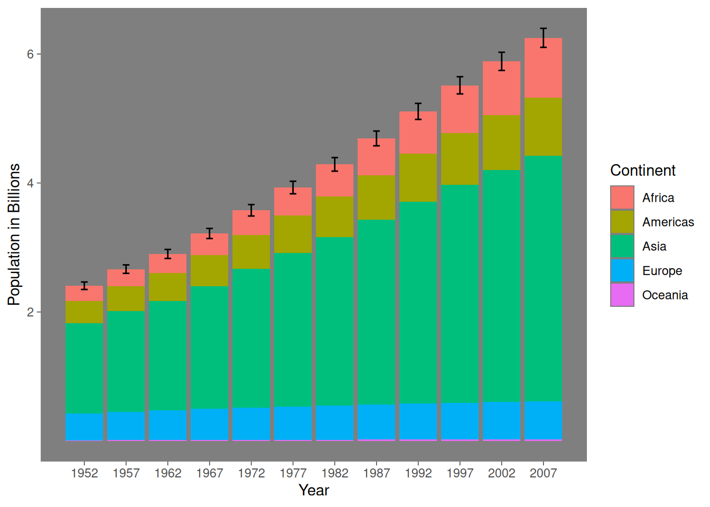
Close project
Closing RStudio will ask you if you want to save your workspace and scripts. Saving your workspace is usually not recommended if you have all the necessary commands in your script.
Useful links
- For visualisations:
- ggplot2 cheatsheet
- Official ggplot2 documentation
- Official ggplot2 website
- Chapter on data visualisation in the book R for Data Science
- From Data to Viz, a website to explore different visualisations and the code that generates them
- Selva Prabhakaran’s r-statistics.co section on ggplot2
- Coding Club’s data visualisation tutorial
- STHDA’s ggplot2 essentials
- Lear more about plotly and exploratory data analysis with the book Interactive web-based data visualization with R, plotly, and shiny
- Our compilation of general R resources